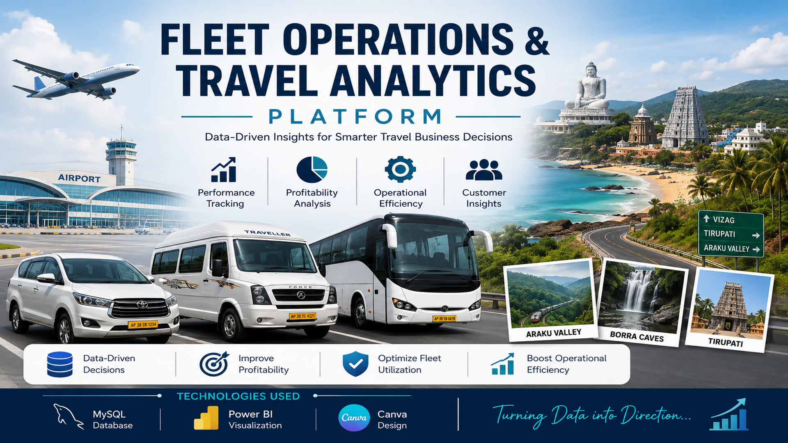
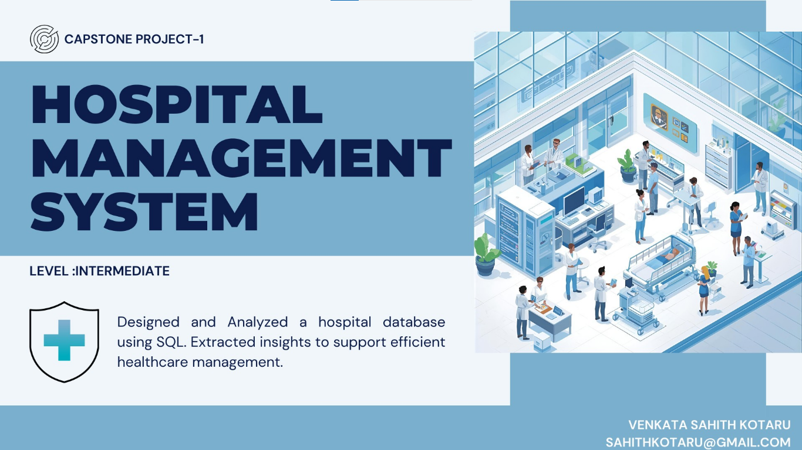
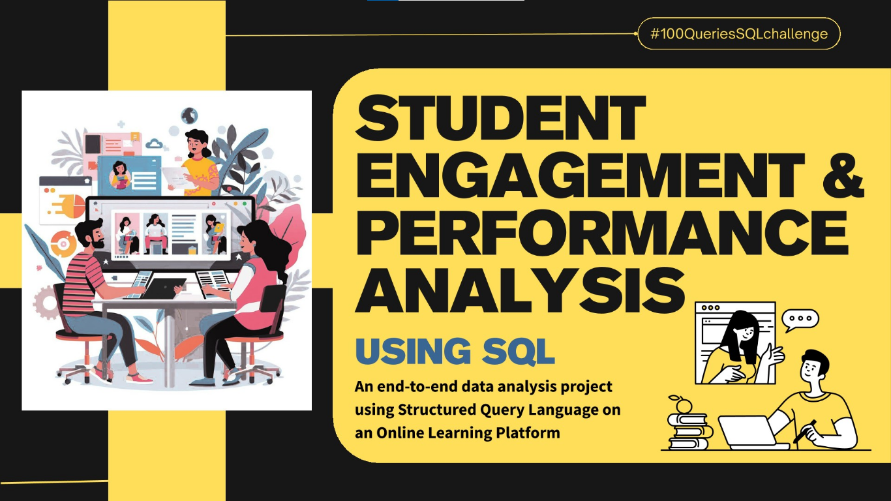
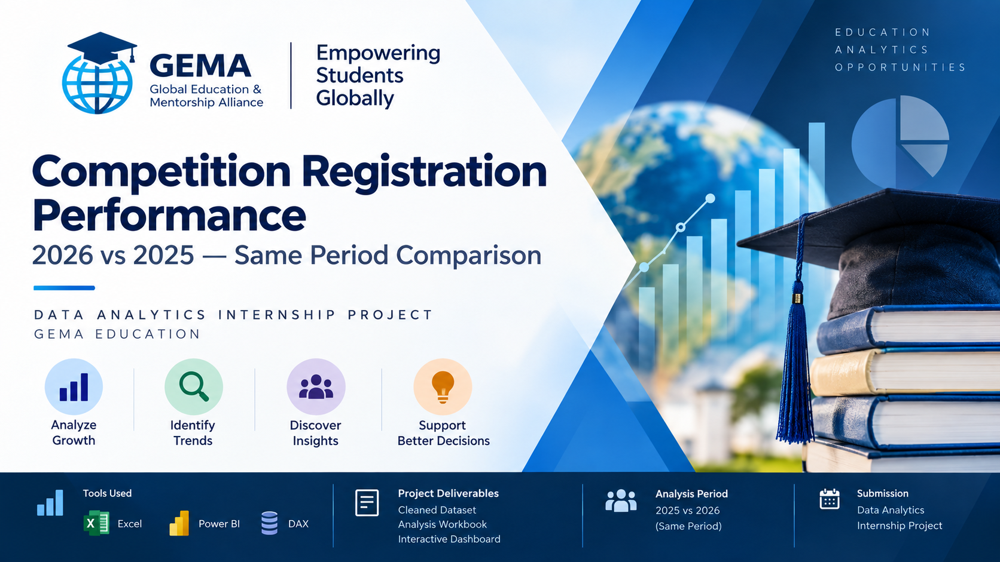
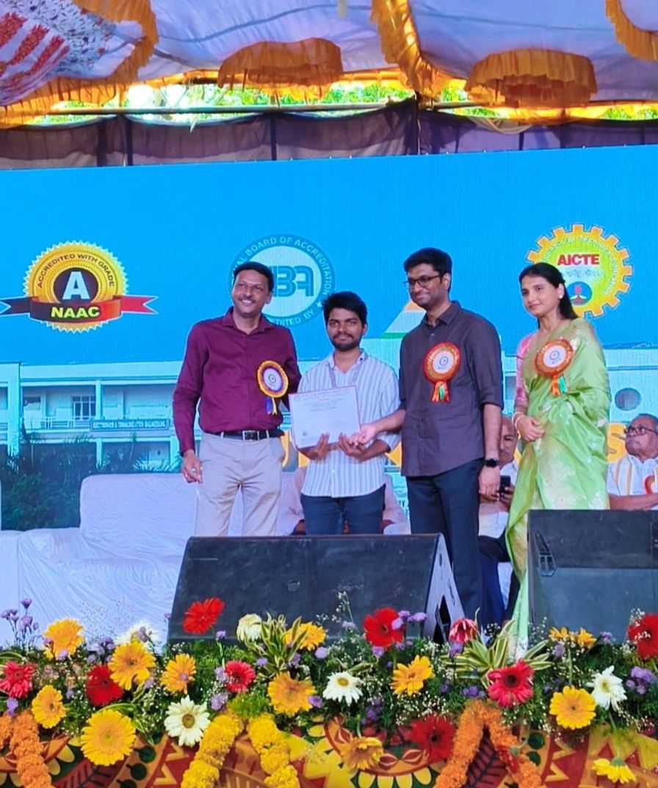
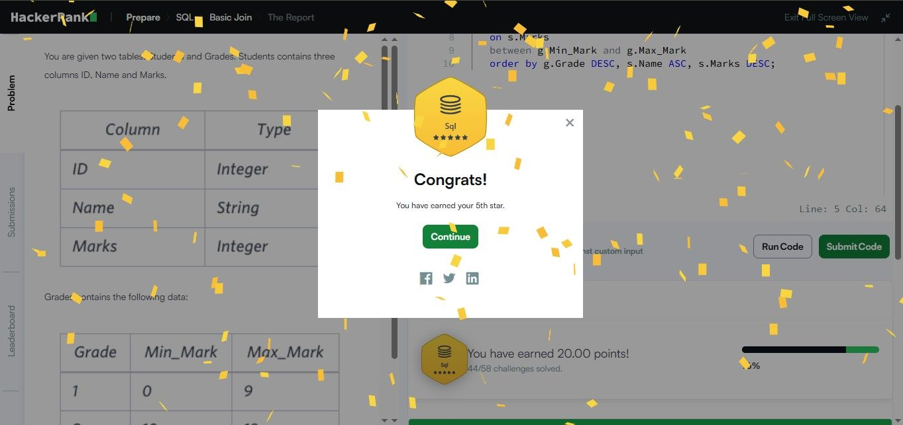
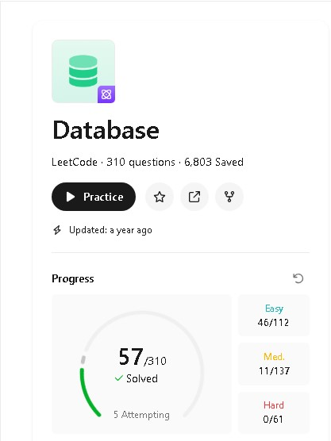
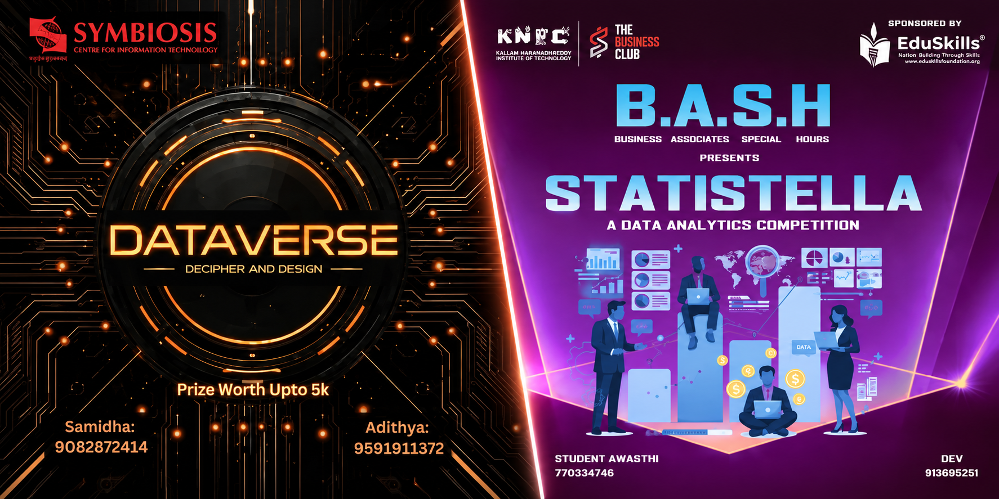
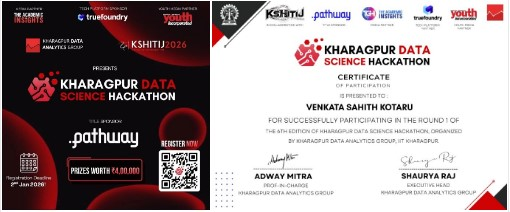

I build database-driven solutions using SQL,
relational database concepts and analytical
problem-solving to turn business requirements
into reliable data solutions.
I'm a curious, detail-oriented and
SQL-focused aspiring Database Developer
who enjoys solving problems through data.
I work primarily with SQL and relational databases,
focusing on query writing, joins, CTEs, window functions,
database design and data-driven problem solving. Through
hands-on projects, I have worked with MySQL to build
database solutions, analyze business requirements and
transform structured data into useful solutions.
Data CleaningData ExplorationBusiness AnalysisReporting
↗
04
BI & Visualization
Power BIExcelTableauDashboards
↗
05
Supporting Tools
PythonFlaskGitGitHub
↗
03 — PROJECTS
Selected
work.
A collection of projects built through
hands-on analytics, problem solving and
data-driven experimentation.

01 / 06
FEATURED PROJECT
↗
SQL
POWER BI
CANVA
Fleet Operations
& Travel Analytics
A data-driven fleet and travel analytics
system designed to analyze vehicles,
trips, revenue, expenses, fuel,
maintenance and customer activity.
01 / 06
FLEET & TRAVEL ANALYTICS
SQL · POWER BI
Fleet Operations & Travel Analytics
A data-driven fleet and travel analytics system
designed to help a travel agency understand
vehicle utilization, trip performance, revenue,
expenses, fuel consumption and maintenance.
01 — OVERVIEW
Project Overview
Fleet Operations & Travel Analytics Platform is
an end-to-end Business Intelligence solution
developed using MySQL and Power BI. The project
transforms operational travel data into meaningful
business insights through SQL analytics and
interactive dashboards.
The platform enables management to monitor fleet
performance, customer behavior, route profitability,
maintenance activities, driver performance and
financial health, supporting data-driven business
decisions.
02 — PROBLEM
Problem Statement
ABC Travels operates a fleet of buses,
cars, and tempos across multiple tourism
routes. Over the past three years, the
company has accumulated thousands of
records related to customers, trips,
vehicles, drivers, maintenance, fuel
expenses, salaries, and payments.
Although large volumes of operational data
were available, management struggled to
transform this information into meaningful
business insights. Business decisions relied
heavily on manual reports and spreadsheets,
making it difficult to identify profitable
routes, monitor vehicle performance, control
operational costs, and improve overall
profitability.
To overcome these challenges, this project
develops a centralized Fleet Operations &
Travel Analytics Platform using MySQL and
Power BI, enabling management to monitor
business performance through interactive
dashboards and data-driven insights.
03 — OBJECTIVES
Objectives
The primary objectives of this project are:
Design a normalized relational database to manage
fleet operations efficiently.
Analyze operational data using advanced SQL queries,
views, functions, and analytical techniques.
Develop interactive Power BI dashboards to monitor
key business metrics.
Evaluate vehicle performance, customer behavior,
driver productivity, and route profitability.
Identify operational inefficiencies and major
cost drivers.
Enable data-driven decision-making through
actionable business insights.
Support business growth by improving operational
efficiency and profitability.
04 — FEATURES
Project Features
01
7 Interactive Power BI Dashboards
02
Relational Database with 9 Tables
03
30 Business-Oriented SQL Queries
04
Views & Functions
05
Advanced DAX Measures & KPIs
06
Fleet, Customer, Driver & Financial Analytics
07
Actionable Business Insights & Recommendations
05 — TECHNOLOGY
Technology Stack
CategoryTechnology
DatabaseMySQL
Query LanguageSQL
Business IntelligencePower BI
Data ModelingStar Schema
Data AnalysisDAX
VisualizationPower BI Visuals
DocumentationCanva
Version ControlGit & GitHub
06 — DATABASE DESIGN
Database Design
The Fleet Operations database is designed using a
normalized relational model to efficiently manage
operational data across multiple business entities.
The database consists of interconnected tables
representing customers, vehicles, drivers, trips,
maintenance logs, fuel logs, trip expenses, and
payments.
07 — WORKFLOW
Project Workflow
The project follows an end-to-end Business Intelligence
workflow, starting from data storage in MySQL, performing
SQL-based business analysis, and finally transforming
the processed data into interactive Power BI dashboards
for decision-making.
08 — SQL ANALYTICS
SQL Analytics
The project leverages advanced SQL techniques to
extract meaningful business insights from
operational data.
SQL Concepts Used
Views
Stored Procedures
Functions
Common Table Expressions (CTEs)
Window Functions
Aggregate Functions
Joins
CASE Statements
The SQL analysis answers 30 real-world business questions
related to fleet operations, customer behavior, route
profitability, maintenance efficiency, vehicle utilization,
and financial performance.
09 — PROJECT DEMO
Project Demo
Watch the project demo to see the Fleet Operations
& Travel Analytics Platform, including the database,
SQL analysis, dashboards, and overall workflow.
10 — INSIGHTS
Key Business Insights
The business is currently operating at a net loss
due to high operational expenses.
Beach tourism generates the highest revenue
among all tourism categories.
Force Traveller is the highest-performing vehicle
based on revenue and utilization.
High-value and repeat customers contribute
significantly to overall business growth.
Recovering pending payments and optimizing
operational costs can improve profitability.
11 — CONCLUSION
Project Conclusion
The Fleet Operations & Travel Analytics Platform
demonstrates how SQL, relational database design,
and Business Intelligence tools can be combined
to transform complex operational data into
meaningful business insights.
The project provides a centralized approach to
analyzing fleet performance, customer behavior,
tourism revenue, operational expenses, vehicle
utilization, maintenance activities, and overall
business profitability.
Through MySQL-based data management, SQL analysis,
database views and functions, and Power BI
visualization, the platform enables management
to understand operational performance and make
data-driven decisions.
↗
Want to explore the project in more detail?
For the complete project documentation, database
design, SQL queries, analysis, dashboards,
insights, and implementation details, explore
the links below.
SQL analysis of orders, customers,
restaurants and delivery performance.
SQLMYSQL

05↗
DATABASE PROJECT
Hospital Management
System Analysis
A structured hospital database designed
to manage and analyze healthcare data.
SQLPOWER BI

03↗
SQL ANALYSIS
Student Engagement &
Performance Analysis
SQL-based analysis of student
engagement and academic performance.
SQLMYSQL

02↗
DATA ANALYTICS
GEMA Education Analytics
Internship Project
Competition registration analysis
comparing performance across periods.
SQLPOWER BIEXCEL
06↗
MACHINE LEARNING
Smart Lender:
AI-Powered Loan Approval Prediction
Machine learning application for
predicting loan approval outcomes.
PYTHONFLASKXGBOOST
05 / 06
DATABASE PROJECT
SQL · POWER BI
Hospital Management
System Analysis
A structured hospital database designed to manage
and analyze healthcare data using SQL and Power BI.
01 — OVERVIEW
Project Overview
This capstone project focuses on analyzing hospital
management data using SQL and Power BI.
The project demonstrates how relational database
analysis and Business Intelligence can be used to
transform healthcare data into meaningful reports.
02 — PROBLEM
Problem Statement
Hospital systems contain large amounts of healthcare
information. Without structured database analysis,
extracting useful information for reporting and
decision-making becomes difficult.
The project addresses this problem by organizing
hospital information in a relational database and
analyzing it using SQL and Power BI.
03 — APPROACH
Approach
MySQL is used for relational database management
and SQL queries are used to analyze healthcare data.
Power BI is then used to transform the analyzed data
into meaningful visual reports and dashboards.
04 — INSIGHTS
Key Insights
The analysis provides a structured view of hospital
data and demonstrates how SQL and Business Intelligence
tools can support healthcare reporting.
A SQL-based analysis project focused on
understanding student engagement and
academic performance using an online
learning platform database.
01 — OVERVIEW
Project Overview
This project analyzes an e-learning platform database
to understand student engagement, academic activity
and performance.
SQL is used to combine relational data, aggregate
student activity and identify meaningful patterns.
02 — PROBLEM
Problem Statement
Online learning platforms generate large amounts of
student activity data. Raw records alone do not provide
a clear understanding of engagement and performance
patterns.
The project transforms relational student data into
meaningful analytical insights using SQL.
03 — APPROACH
Approach
SQL queries were used to combine relational tables,
aggregate student activity and analyze engagement
and performance patterns.
04 — INSIGHTS
Key Insights
The analysis demonstrates how SQL can be used to
understand student activity, engagement and
performance from relational e-learning data.
A SQL-based Online Food Delivery analytics project
that transforms transactional food delivery data
into actionable business insights using advanced
SQL techniques and basic visualization.
01 — OVERVIEW
Project Overview
Online Food Delivery Business Analysis using SQL is a data analytics project designed to help an online food delivery company understand its customers, orders, restaurants, menu items, and revenue performance.
The project uses interconnected data from Customers, Orders, Order_Details, Menu_Items, and Restaurants to analyze customer purchasing behavior, popular food items, order trends, restaurant performance, and revenue patterns.
Using SQL techniques such as Joins, CTEs, Aggregate Functions, Window Functions, Stored Procedures, and Ranking, the project converts raw transactional data into meaningful business insights. These insights help the company understand which restaurants and customers contribute most to the business, identify performance gaps, and support data-driven decision-making.
02 — PROBLEM
Problem Statement
An online food delivery company generates a large volume of transactional data from customers, orders, restaurants, and menu items. Although the company has this data, it is difficult to understand customer purchasing behavior, identify popular food items, measure order-value patterns, and evaluate the performance of different restaurants. The raw data therefore needs to be converted into meaningful business information.
The company needs a data-driven solution to answer important business questions such as which food items are ordered most frequently, which restaurants attract the most or fewest customers, which customers generate the highest order value, how many orders are placed over time, and how restaurants compare in terms of revenue. These areas are explicitly covered by the project's ten SQL problem statements.
The proposed solution is an SQL-based Business Analysis System that integrates data from the five related tables—Customers, Orders, Order_Details, Menu_Items, and Restaurants—and applies advanced SQL techniques such as joins, aggregate functions, CTEs, window functions, stored procedures, and ranking. The resulting insights can help the company understand customer behavior, monitor restaurant performance, identify revenue patterns, and support better business decision-making
03 — OBJECTIVES
Project Objectives
Analyze a real-world Online Food Delivery System
dataset using SQL.
Understand customer ordering behavior and
purchasing patterns.
Identify the most frequently ordered food items.
Compare high-value and low-value orders.
Evaluate restaurant performance using order
and customer metrics.
Identify high-value customers and frequent
customers.
Analyze daily and monthly order trends.
Classify customers based on their registration year.
Rank restaurants based on their total revenue.
Generate actionable business insights from
SQL analysis.
04 — DATABASE
Database Structure
The Online Food Delivery dataset is organized into
five relational tables: Customers, Orders,
Order_details, Menu_Items and Restaurants.
Customers —
customer_id, customer_name, city, signup_date
Fish Curry is the most frequently ordered item
among the top three items.
The majority of orders are low-value, while
high-value orders form a much smaller portion
of the transactions.
Golden Table serves the highest number of unique
customers among the analyzed restaurants,
with 47 unique customers.
Several restaurants have relatively low order
volumes, indicating areas where marketing or
menu improvements may be required.
Ishaan Gupta is the highest-value customer in
the analysis, with spending above ₹10,000.
Monday records the highest number of items sold,
while Friday and Saturday show the lowest
item sales.
Vihaan Patel places the highest number of orders
among the analyzed customers.
Monthly order analysis shows variation across
the year, with January having the highest value
in the displayed monthly results.
Regular customers form the largest signup category
at approximately 41%, followed by Early Bird
customers at 39% and New customers at 20%.
Restaurant revenue ranking shows a small group
of high earners, a larger middle-performing group
and a smaller group of low-revenue restaurants.
10 — DEMO
Project Demo
Watch the project demo to see the Online Food Delivery
SQL project, including the database structure, SQL
analysis, queries, results and overall workflow.
11 — CONCLUSION
Project Conclusion
This project analyzed Online Food Delivery data using
advanced SQL techniques such as window functions,
CTEs, stored procedures and aggregate queries.
The analysis revealed differences in restaurant revenue,
customer ordering behavior, food item popularity,
order values and sales patterns.
Overall, the project demonstrates how SQL can transform
raw transactional data into actionable business insights.
A data analytics project focused on
analyzing competition registration data,
comparing performance across periods and
generating meaningful business insights.
01 — OVERVIEW
Project Overview
This project analyzes GEMA Education’s competition registration data for 2025 and 2026 to understand changes in registration performance and identify key growth drivers. The data was cleaned and standardized before performing a same-period year-over-year analysis across competitions, registration sources, and monthly trends. An interactive Power BI dashboard was then developed to present KPIs, performance comparisons, trends, insights, and management recommendations for data-driven decision-making.
The project combines EXCEL, Power BI and DAX to clean,
analyze and visualize registration information.
02 — PROBLEM
Problem Statement
GEMA Education conducts multiple competitions and receives registrations from different schools, cities, and registration channels. However, comparing the current year's registration performance with the previous year's corresponding period can be difficult when the data contains duplicates, missing values, inconsistent names, different date formats, and invalid/test records. Without a standardized analysis, management may not have a clear view of which competitions are growing, which registration channels are contributing most, and where additional promotional efforts are needed.
The objective of this project is to clean and standardize the 2025 and 2026 registration data, perform a same-period year-over-year comparison, analyze competition-wise, monthly, and source-wise trends, and develop an interactive Power BI dashboard that converts the results into actionable insights and recommendations for GEMA management.
03 — APPROACH
Approach
Data Collection & Preparation
Combined the 2025 and 2026 registration datasets
into a unified dataset for analysis.
Data Cleaning
Removed duplicate and invalid/test records, handled
missing values, standardized competition and school
names, and converted registration dates into a
consistent format.
Data Modeling
Created a date table and established relationships
in Power BI to support time-based and same-period
analysis.
Comparative Analysis
Compared 2026 registrations with the
same period in 2025, calculating
total registrations, absolute change, and YoY
growth percentage.
Detailed Analysis
Analyzed performance by competition,
registration source, and month to identify
growth patterns and areas requiring attention.
Visualization & Dashboarding
Developed an interactive Power BI dashboard with KPI
cards, trend charts, competition comparisons,
source analysis, insights, and recommendations.
Business Insights
Identified major growth areas and comparatively
slower-growing competitions and translated the
findings into actionable recommendations for
management.
Received a merit-based scholarship of 5,000 rupees in recognition
of academic performance.

02
Merit Scholarship
Earned a second merit scholarship of 10,000 rupees for maintaining
strong academic performance.

03
5★ SQL — HackerRank
Achieved a 5-Star rating in SQL through
consistent problem-solving practice.

04
Solved 50+ SQL Problems on Leetcode
Solved 50+ SQL problems on LeetCode to strengthen
query writing and database problem-solving skills.
06
EVENTS & ACTIVITIES
Beyond the code.

01
Technical Events
Participated in 2 technical events including
Dataverse and Statistella Data Analytics Competition,
gaining exposure to technical discussions and analytics.

02
Kharagpur Data Science Hackathon
Participated in the Kharagpur Data Science Hackathon,
gaining experience in data-driven problem solving
and competitive analysis.
03
100 Query SQL Challenge
Successfully completed a 100-query SQL challenge,
strengthening SQL query writing and database
problem-solving skills.
04
Community Service Project
Completed a field-based project on the use of
chemicals on fruits and vegetables through field
visits, observations and data collection.
07
EXPERIENCE
Where I applied my skills.
2026
DATA ANALYTICS INTERNSHIP
Data Analytics Intern
CodTech IT Info Solutions
01
Worked on an education analytics assignment involving
competition registration datasets. Cleaned and analyzed
2025 and 2026 registration data to identify meaningful
patterns and differences.
SQLPower BIExcelData CleaningData Analysis
2026
PART-TIME EXPERIENCE
Operations Associate
Zepto
02
Gained hands-on experience in fast-paced operations,
order processing, inventory handling and maintaining
accuracy while working in a time-sensitive environment.